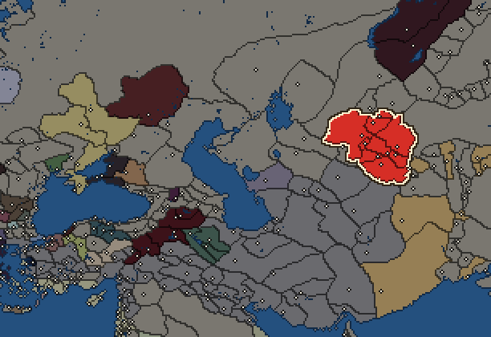
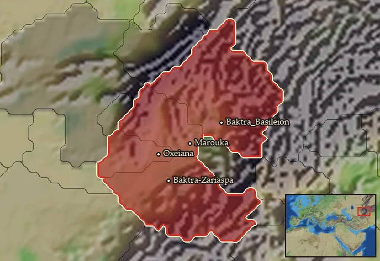

RTR: Imperium Surrectum
RTR: Imperium SurrectumBactria


- difficulty Easy
- Eastern Hellenistic culture
- believes
 Greco-Bactrian
Greco-Bactrian - 9 settlements
- capital Baktra-Zariaspa
- 44,250 manpower
- 9 characters
- 20 faction units
- 435 regional units
The campaign brief
"Let's admit the truth from here on in:
We too are Greek – what else could we be? –
But with loves and with emotions that are Asia's,
But with loves and with emotions
That now and then are alien to Greek culture." – C. P. Cavafy, Homecoming from Greece
More than fifty years ago I was still a pupil to that greatest mind of Greece, the wise Aristotle who taught as he strolled under the shade of the colonnades of the Agora... It is true, you learn good manners from your elders, but from a teacher you learn to control your passions. I remember these things in my old age, as I write down these truths for my good friend Diodotos, here in this distant and once fabled land of Baktria. We Greeks once told tales of it, of a land untouched by civilisation, where savages ate their own parents and ghastly creatures lurked beyond the mountains ... A land that only gods and heroes of legend dared to walk.
Alexander was the first mortal who broke the spell of mysticism and darkness, and it was through him that we have learnt how much we didn't know about the world. The great Aristotle once said that Barbarian and slave are the same in nature, and indeed, does not Euripides write that Hellenes should rule Barbarians, but not Barbarians Hellenes, as the former are slaves, while the latter are free? Oh, I have come to accept in my adulthood that the world is not as simple as our ancients thought. Perhaps, it is right that way, keeping us secluded from one another, thinking we are the best of men...
Baktria was once a paradise for the Persians. Deserving that title, surely, for it is a land of a thousand cities, of bountiful harvests, innumerable herds, minerals and precious stones. With Alexander's conquests – his want of going ever-further, always intrigued by what he would find over the next hill – he found kindred spirits in the multitude of Greeks who followed him East. It is their descendants who now populate the cities of Baktria. Travelers, explorers, merchants, fortune-seekers, soldiers and administrators have come in droves to the East under the inviting hands of Seleukos Nikator and his son Antiochos. Their satrap of Baktria, the elder Diodotos, had been given charge to transform its cities from Barbarian into magnificent Greek ones. During those years under Seleucid control, Baktria has truly been formed into a Hellenistic province, and its growth and increased strength have equally increased the Scythian fears and envy. Their raids continue every year, but an attack the sort of which happened years ago on Margiane only increased the Seleucid military development in this wider region. Baktria’s strength alone stands between the Greeks and these filthy nomad hordes. Baktria needs a strong king!
From the moment I crossed the high mountains into this land, I have gazed upon a miracle of civilisation. Wherever I look, I see Greek cities and fortified towns dotting the oases, or along the meandering Oxus River. Two weeks ago, I reached the capital of this land, the ancient and oldest city of Baktra, with its formidable walls.
Thence, the satrap Diodotos has sent me laden with gifts even further East, to the newly-established seat of his son – my young pupil Diodotos – Alexandria on the Oxus, where a heron to the city's founder Kineas, awaits me to inscribe the Delphic message into its stones:
As children, learn good manners.
As young men, learn to control the passions.
In middle age, be just.
In old age, give good advice.
Then die, without regret.
As I reach the city, Diodotos greets me with affection. Entering the gates, a vision of home welcomes me: walking along the streets I recognise Rhodian porticoes, Athenian propylaea, Delian houses, Megarian bowls, Corinthian tiles, a Macedonian palace. Truly, these explorers and fortune-builders long for a Greek way of living so far away from home. Here, surrounded by Barbarian natives who live, walled off, among them, they have recreated Greece as an image, copied all over this hard land of bitter winters and blazing summers. It is to be so, in order that never would happen what we saw among those ‘Greeks’ stumbled upon by Alexander during his conquests in Mesopotamia and Persia.
That they may never forget that they are Greek.
Starting settlements
Bactria begins with 9 settlements and 44,250 manpower.
| Settlement | Region | Size | Manpower | Already built | Settlement | Region | Size | Manpower | Already built |
|---|---|---|---|---|---|---|---|---|---|
| Baktra-Zariaspa (capital) | Baktriane | large town | 5,950 | 11 buildings | Baktra_Basileion | Anatolike Baktriane | large town | 4,300 | 10 buildings |
| Darapsa | Darapsia | large town | 4,300 | 10 buildings | Marakanda | Sogdiane | large town | 5,000 | 11 buildings |
| Marouka | Oxos | large town | 5,000 | 11 buildings | Oxeiana | Mardyenia | large town | 5,000 | 11 buildings |
| Nautaka | Anatolike Sogdiane | large town | 5,000 | 11 buildings | Kyropolis | Kyreschata | large town | 5,000 | 11 buildings |
| Antiocheia-Skythia | Iaxartes | large town | 4,700 | 11 buildings |
What is already built in each settlement
Baktra-Zariaspa, in Baktriane: Small Treasury, Governor's Villa, Wooden Palisade, Homeland, Region Information Scroll, Roads, Local Barter, Grape Orchards (Rural), Basin Irrigation (Crops), Basic Armoury, Cisterns (Sanitation)
Baktra_Basileion, in Anatolike Baktriane: Camel Herd (Rural), Governor's Villa, Wooden Palisade, Homeland, Region Information Scroll, Roads, Local Barter, Slope Pasturing (Husbandry), Training Grounds, Cisterns (Sanitation)
Darapsa, in Darapsia: Camel Herd (Rural), Governor's Villa, Wooden Palisade, Homeland, Region Information Scroll, Roads, Local Barter, Slope Pasturing (Husbandry), Training Grounds, Cisterns (Sanitation)
Marakanda, in Sogdiane: Orchards (Rural), Large Colony, Governor's Villa, Wooden Palisade, Direct Rule, Region Information Scroll, Roads, Local Barter, Slope Pasturing (Husbandry), Local Garrisons, Cisterns (Sanitation)
Marouka, in Oxos: Orchards (Rural), Large Colony, Governor's Villa, Wooden Palisade, Direct Rule, Region Information Scroll, Roads, Local Barter, Slope Pasturing (Husbandry), Local Garrisons, Cisterns (Sanitation)
Oxeiana, in Mardyenia: Orchards (Rural), Large Colony, Governor's Villa, Wooden Palisade, Direct Rule, Region Information Scroll, Roads, Local Barter, Slope Pasturing (Husbandry), Local Garrisons, Cisterns (Sanitation)
Nautaka, in Anatolike Sogdiane: Orchards (Rural), Large Colony, Governor's Villa, Wooden Palisade, Direct Rule, Region Information Scroll, Roads, Local Barter, Slope Pasturing (Husbandry), Local Garrisons, Cisterns (Sanitation)
Kyropolis, in Kyreschata: Orchards (Rural), Large Colony, Governor's Villa, Wooden Palisade, Direct Rule, Region Information Scroll, Roads, Local Barter, Slope Pasturing (Husbandry), Local Garrisons, Cisterns (Sanitation)
Antiocheia-Skythia, in Iaxartes: Small Colony, Governor's Villa, Wooden Palisade, Indirect Rule, Region Information Scroll, Roads, Horse Breeder (Rural), Local Barter, Irrigation Ditches (Crops), Local Garrisons, Cisterns (Sanitation)
Starting diplomacy
Allied with (1):  Seleucid Empire
Seleucid Empire
Trade agreements with (1):  Seleucid Empire
Seleucid Empire
At peace with every other faction.
Like every faction, it is also at war with the  Free Peoples, who hold every settlement no faction does.
Free Peoples, who hold every settlement no faction does.
Homeland
Bactria's homeland is 4 regions. Only there can it install the Homeland government (more on homelands).

Starting characters
| Name | Role | Age | Name | Role | Age | Name | Role | Age | Name | Role | Age |
|---|---|---|---|---|---|---|---|---|---|---|---|
| Diodotos | General | 60 | Diodotos | General | 40 | Klearchos | General | 72 | Theodotos | General | 22 |
| Antiochos | General | 31 | Maisolos | General | 22 | Demetrios | General | 37 | Antimachos | General | 27 |
| Apollonios | General | 30 |
Faction mechanics
From the game's own guide. See also the other game guides.
Special Mechanics
Bactria has a mercenary centre in Baktra-Zariaspa, check its Region Information Building for more details.
Military reforms
Baktrian reforms requirements: Conquer 20 new cities and 50 turns
Unlocks: Baktrian Thorakitai, Baktrian Late General, Bactrian Cataphracts, Baktrian Hetairoi, Epigonoi Hypaspists, Epigonoi Phalangites.
Reforms
For every faction: Military innovations have arrived!, Second wave of military innovations have arrived!.
Units you can recruit
The same as in the main campaign.